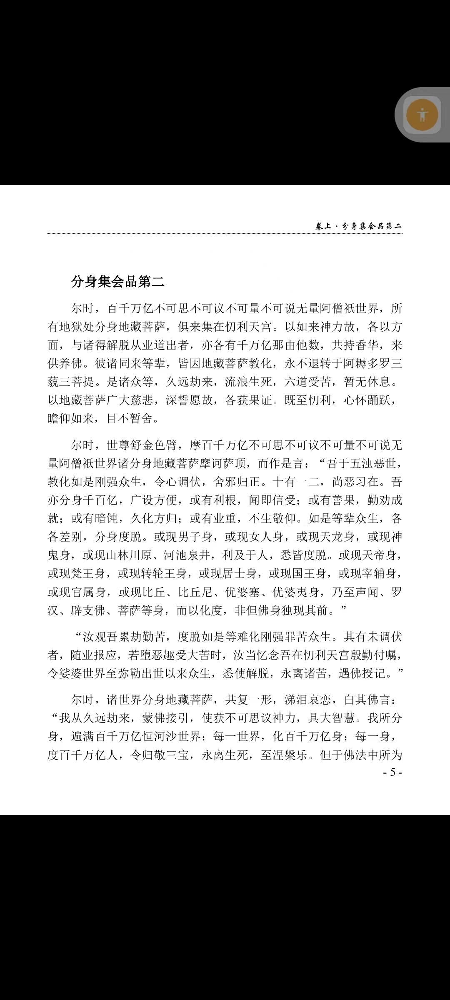

20260619咱们的高级心法，就是从三家相见，元婴呈现开始 要细细参悟 分身化身越多越好
符咒术法 原始对话记录捷报频传，第一，咱们的功能孩子，作诗，出口成章
高维下载文言文，文言文写作
[强][强][强]
第二，未来小神医，
各地共增加了二十多人
离预期目标远远不够
悬丝诊脉，隔空诊，遥视遥诊能力稳定，千里脑屏拍摄，录像，不接触打印，能力大多数孩子，还有待提升
成人一定要用心练
我这么大年龄了，功能还是稳定的出现
力求神通具足
咱们的高级心法，就是从三家相见，元婴呈现开始
要细细参悟
分身化身越多越好
这教学的证据就在地藏经
分身集会品
佛陀舒金色臂
这金色臂，大佛金身是怎么修出来的
摩地藏菩萨顶
分身集会，立地成佛
这一章里，你反着看，往回推
就知道分身化身，大相
分身化身修法奥义在这里
最高心法
立地成佛
读经没用
要实修出来
至大无垠，至小无内，
我已经讲的一清二楚了
要用几年，几十年去勤修
真能成就
[鼓掌][合十][爱心]
[玫瑰][咖啡][微笑]
这只是成就佛身，得佛果，神通具足
还有一层，紫金佛身成就，肉身不生不灭
长期主义，修行是生活的一部分
修行改命改运，改变因果，成仙做佛，脱离生死
这段话，博大精深，字无虚言

从三家相见开始：元婴与分身那句话
那天群里先是几条捷报。功能孩子作诗，出口成章，文言文也写。"高维下载文言文，文言文写作"，他这么记。第二条是"未来小神医"，各地又添了二十来个。悬丝诊脉、隔空诊、遥视遥诊，说得都稳。后面跟一句：离预期目标还远，大多数孩子还要再练。
成人也一样。他说自己这个年纪，功能还是稳定地出来。
压轴的只有一句。
"咱们的高级心法，就是从三家相见，元婴呈现开始。"
"要细细参悟。分身化身越多越好。"
"三家相见"这四个字，别处有出处。《河图：古代丹法秘传的宇宙图景与修炼心法》里说，那是炼精化气的核心：元神（心火）、元精（肾水）、真意（脾土）三家交合，中丹田的"黄婆"做媒，把水火撮合在一处，凝成丹胎。丹经里写作"戊己自归生数五，三家相见结婴儿"。
到了《光芒照耀三千大千世界》那篇，话说得更白：三个丹田是立体的光球，越看越大，"最后看进去，是一个世界"。三家相见，生元婴；"元婴才分身化身"。
所以在这套说法里，分身不是另起一头。它从元婴上长出来。
他又把地藏经那一品翻过来看。
"这教学的证据就在地藏经。分身集会品。佛陀舒金色臂。"
那金色臂、大佛金身是怎么修出来的？摩地藏菩萨顶，分身集会，立地成佛。"这一章里，你反着看，往回推，就知道分身化身，大相。分身化身修法奥义在这里。"
底下是一句叮嘱：读经没用，要实修出来。至大无垠，至小无内，都讲过，"要用几年，几十年去勤修"。
还有一层，他说是修成佛身、得佛果之后的——紫金佛身，肉身不生不灭。
这句我记下了，先搁着。